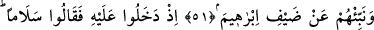
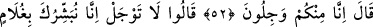
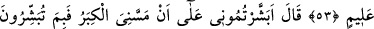
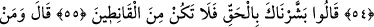
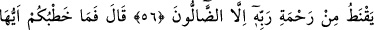
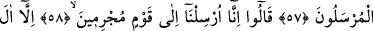
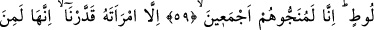
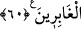
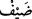

İBRÂHİM (A.S.)’IN
MİSAFİRLERİ
51. Onlara İbrâhim’in misafirlerinden (meleklerden) de haber ver.
52. Onun yanına girdikleri zaman, “selam” dediler. (İbrâhim:) Biz sizden
çekiniyoruz, dedi.
53. Dediler ki: Korkma; biz sana ilim sâhibi bir oğul müjdeliyoruz.
54. (İbrâhim:) Bana ihtiyarlık çökmesine rağmen beni müjdeliyor musunuz? Beni
ne ile müjdeliyorsunuz? dedi.
55. Sana gerçeği müjdeledik, sakın ümitsizliğe düşenlerden olma! dediler.
56. (İbrâhim:) dedi ki: Rabbinin rahmetinden, sapıklardan başka kim ümit keser?
57. “Ey elçiler! (Başka) ne işiniz var?” dedi.
58. Dediler ki: “Biz, suçlu bir topluma (onları helâk etmeye) gönderildik.”
59. “Ancak Lût ailesi hariç. Onların hepsini kurtaracağız.”
60. “(Fakat Lût’un) karısı müstesna; biz onun geri kalanlardan olmasını takdir
ettik.”
Ey Muhammed! “Onlara” ümmetine “İbrâhim’in misâfirlerinden (meleklerden)
haber ver.”
“Dayf  (misâfir)” kelimesi hem az hem de çok kimse için eşit olarak kullanılır.
Burada çoğul anlamındadır. Bu misâfirler, parlak delikanlılar görünümündeki Cebrâil
(a.s.) ile on bir melektir. Meleklere, misâfir görünümünde oldukları için ya da İbrâhim
(a.s.) onları misâfir zannettiğinden “misâfir” denmiştir.